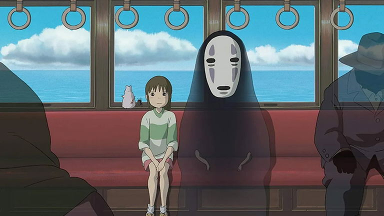
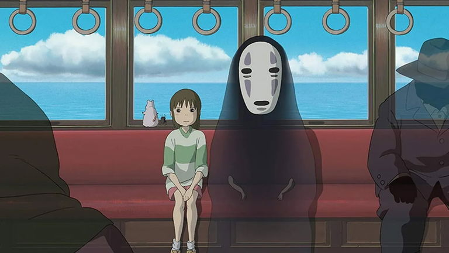

Dos hermanas descubren criaturas mágicas en el bosque, incluyendo al adorable Totoro.
Chihiro entra en un mundo de espíritus y debe trabajar para salvar a sus padres.
Dos hermanas descubren criaturas mágicas en el bosque, incluyendo al adorable Totoro.
Chihiro entra en un mundo de espíritus y debe trabajar para salvar a sus padres.
El Estudio Ghibli fue fundado en 1985 por Hayao Miyazaki e Isao Takahata. Es conocido por sus películas de animación de alta calidad que combinan historias profundas con una animación impresionante. El estudio ha ganado numerosos premios internacionales y es considerado uno de los mejores estudios de animación del mundo.